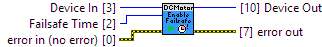

Device # Identification
Enables the failsafe feature for the channel, with a given failsafe time.
The failsafe feature is intended for use in applications where it is important for the channel to enter a known safe state if the program controlling it locks up or crashes. If you do not enable the failsafe feature, the channel will carry out whatever instructions it was last given until it is explicitly told to stop.
Enabling the failsafe feature starts a recurring failsafe timer for the channel. Once the failsafe timer is enabled, it must be reset within the specified time or the channel will enter a failsafe state. The failsafe timer may be reset either by calling this function again, or using the ResetFailsafe function. Resetting the failsafe timer will reload the timer with the specified failsafe time, starting when the message to reset the timer is received by the Phidget.
For example: if the failsafe is enabled with a failsafe time of 1000ms, you will have 1000ms to reset the failsafe timer. Every time the failsafe timer is reset, you will have 1000ms from that time to reset the failsafe again.
If the failsafe timer is not reset before it runs out, the channel will enter a failsafe state. For DC Motor channels, this will set the Target Velocity to 0. Once the channel enters the failsafe state, it will reject any further input until the channel is reopened.
To prevent the channel from falsely entering the failsafe state, we recommend resetting the failsafe timer as frequently as is practical for your applicaiton. A good rule of thumb is to not let more than a third of the failsafe time pass before resetting the timer.
Once the failsafe timer has been set, it cannot be disabled by any means other than closing and reopening the channel.

Device Support:1060_0 (ver: 100, 110) DC Motor Controller : Unsupported
1064_0 (ver: 100, 101, 102) DC Motor Controller : Unsupported
1064_1 (ver: 102) DC Motor Controller : Unsupported
1065_0 (ver: 100, 101) DC Motor Controller : Unsupported
1065_1 (ver: 100, 101) DC Motor Controller : Unsupported
DCC1000_0 (ver: 115) DC Motor Controller : Unsupported
DCC1000_0 (ver: 204, 205, 206) DC Motor Controller : Unsupported
DCC1001_0 (ver: 114, 116, 117) DC Motor Controller : Unsupported
DCC1002_0 (ver: 100) DC Motor Controller : Unsupported
DCC1003_0 (ver: 100) DC Motor Controller : Unsupported
|
|
Device In Device # Identification |
|
|
error in (no error) error in can accept error information wired from VIs previously called. |
|
|
status status is TRUE (X) if an error occurred or FALSE (checkmark) to indicate a warning or that no error occurred. Right-click the error in control on the front panel and select Explain Error or Explain Warning from the shortcut menu for more information about the error. |
|
|
code code is the error or warning code. Right-click the error in control on the front panel and select Explain Error or Explain Warning from the shortcut menu for more information about the error. |
|
|
source source describes the origin of the error or warning. Right-click the error in control on the front panel and select Explain Error or Explain Warning from the shortcut menu for more information about the error. |
|
|
Failsafe Time Failsafe timeout in milliseconds Units: milliseconds (ms) |
|
|
Device Out Same as Device In |
|
|
error out error out passes error or warning information out of a VI to be used by other VIs. |
|
|
status status is TRUE (X) if an error occurred or FALSE (checkmark) to indicate a warning or that no error occurred. Right-click the error out control on the front panel and select Explain Error or Explain Warning from the shortcut menu for more information about the error. |
|
|
code code is the error or warning code. Right-click the error out control on the front panel and select Explain Error or Explain Warning from the shortcut menu for more information about the error. |
|
|
source source describes the origin of the error or warning. Right-click the error out control on the front panel and select Explain Error or Explain Warning from the shortcut menu for more information about the error. |